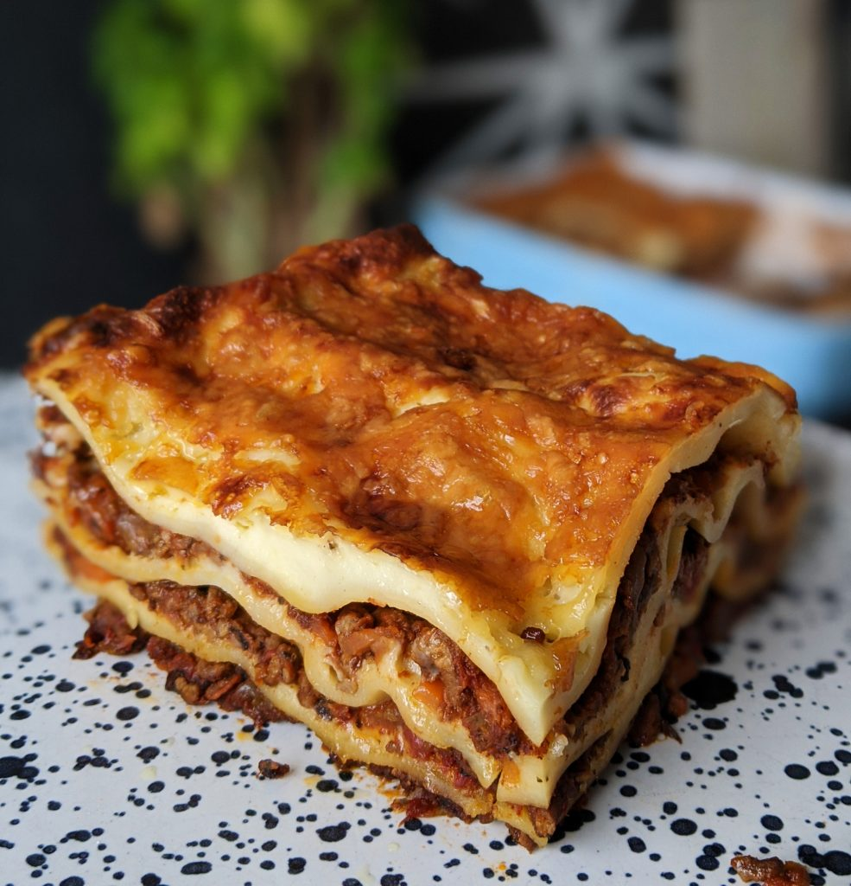

Lasagne

Description
Lasagne is your classic, deli style lasagne recipe with a rich,
beef mince filling and a deliciously creamy béchamel sauce.
It's not the speediest lasagne. You'll need to set aside a couple of hours to prepare
and cook the sauce, but you will be well rewarded.
Ingredients
- 2 tbsp. olive oil
- 1 1 large onion, finely chopped
- 1 stick celery, finely diced
- 1 large carrot, peeled and finely diced
- 2 garlic cloves, crushed
- 2 tbsp. tomato pureee
- 1 tsp. dried oregano
- 500 g (1lb 2oz) beef mince
- 200 ml (7 fl oz (⅓ pint)) red wine
- 400g tin chopped tomatoes
- 100 ml (3 ½ fl oz) hot beef stock
For the béchamel sauce
- 1 garlic clove
- 1 fresh bay leaf
- 50 g (2oz) butter
- 50 g (2oz) plain flour
- 600 ml whole milk
- about 9 sheets dried egg lasagne (enough for 3 layers of pasta)
- 100 g (3 ½oz) Parmesan, grated